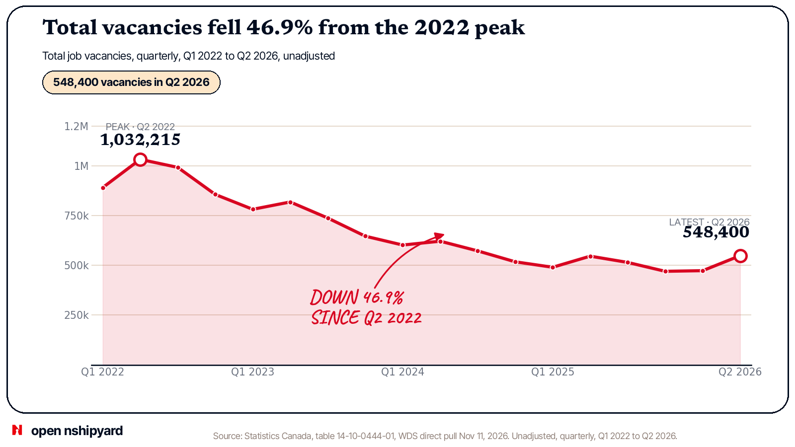
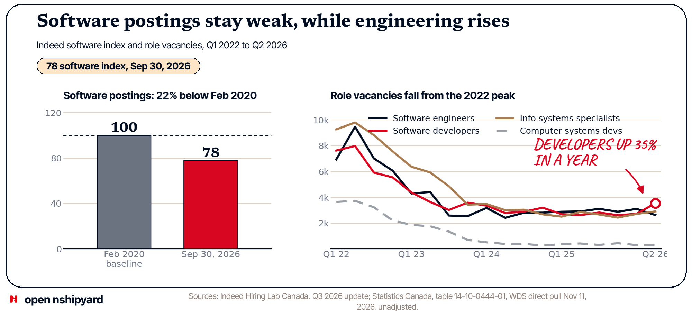
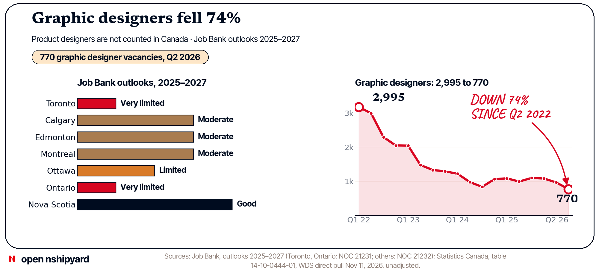
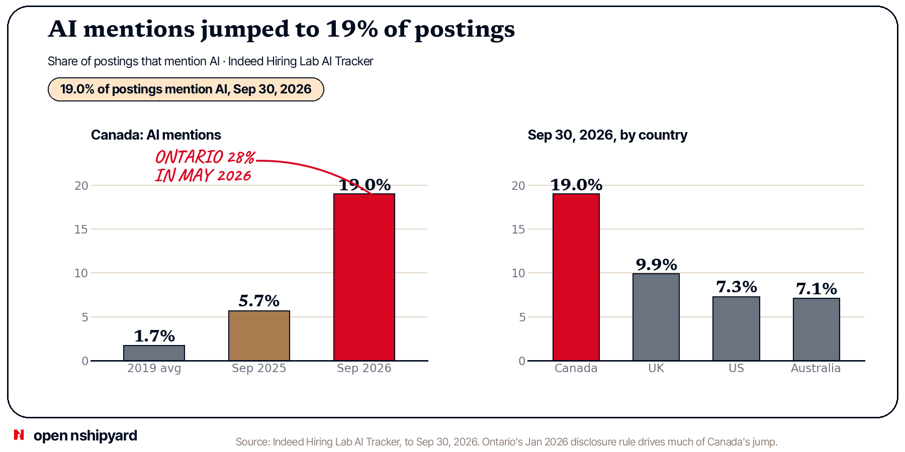
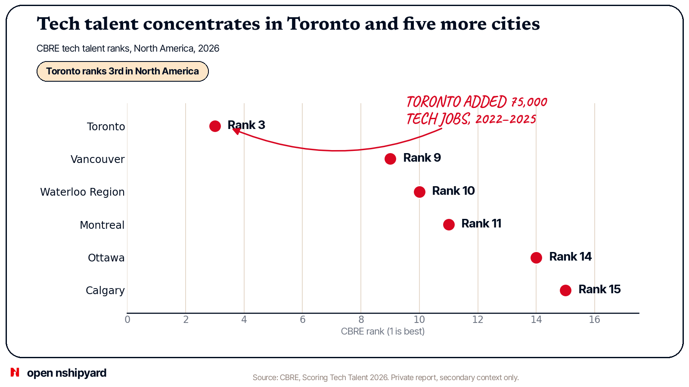
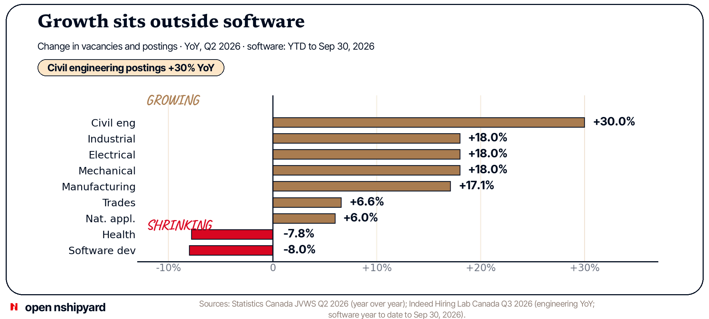

Canada's tech market is split. Total vacancies fell 46.9% from the 2022 peak. Software postings stay weak.
The state of Canada's tech job market in late 2026, built from open Canadian data, with private sources labelled. AI words are everywhere in postings, but Ontario's disclosure rule drives much of the jump. Growth sits outside software, in engineering, trades, and manufacturing.
Takeaway 1: Tech vacancies fell from the 2022 peak, but some roles rose
Total vacancies fell from 1,032,215 in Q2 2022 to 548,400 in Q2 2026, down 46.9%, in the direct StatCan WDS series, 18 quarters, Q1 2022 to Q2 2026. Natural and applied sciences vacancies reached 43,400 in Q2 2026, up 5.7% from Q1 2026 and up 6.0% from a year earlier. Software developers and programmers stood at 3,545 in Q2 2026, up 925 from 2,620 a year earlier. User support technicians stood at 2,365, up 480 from 1,885. Job Bank shows 2,625 software engineer vacancies in Q2 2026, at $55.85 offered per hour. The WDS value matches Job Bank exactly. Canada has no TrueUp-style series for product manager openings. No Canada PM win can be claimed from open data. The rises are real, but they are narrow. They sit in a few technical roles, against a 46.9% fall from the peak.


Takeaway 2: Software postings stay weak, while engineering postings rise
Indeed Canada software development postings fell 8.0% year to date to Sep 30, 2026. They sit 22% below the pre-pandemic baseline, at an index of 78. The vacancy series tells the same story from the 2022 peak. Software engineers fell from 9,480 in Q2 2022 to 2,625 in Q2 2026, down 72.3%. Information systems specialists fell from 9,805 to 2,910, down 70.3%. Computer systems developers fell from 3,730 to 285, down 92.4%. Software developers fell from 7,985 to 3,545, down 55.6%, though they rose 35.3% in the last year. National unemployment rose to 6.7% in Oct 2026. Employment fell for three straight months: 41,700 in August, 68,300 in September, and 4,700 in October. Yet natural and applied sciences unemployment was only 2.8% in September. The split is the story. Software demand is weak. Technical demand is tight.


Takeaway 3: Graphic designers fell 74%. Product designers are not counted in Canada
The US counts about 1,900 open product design roles worldwide, down 28% in a year. Canada now has a count for graphic designers, but not for product designers. Graphic designer vacancies fell from 2,995 in Q2 2022 to 770 in Q2 2026, down 74.3%. Web designer vacancies fell from 335 to 75, but 7 of 18 quarters are suppressed, so that series is thin. NOC 52120 covers graphic designers and illustrators. It is not a product design count. Job Bank rates the software outlook as Very limited in Toronto and in Ontario, Limited in Ottawa, and Moderate in Calgary, Edmonton, and Montreal. Nova Scotia rates Good for software engineers and designers. The design fall is real. The product design gap stays open.


Takeaway 4: Everybody now needs AI, but Ontario's rule pushed Canada's number up
AI words appear in 19.0% of all Canadian Indeed postings on Sep 30, 2026. That is up from 5.7% a year earlier and 1.7% in 2019. The US sits at 7.3%, the UK at 9.9%, and Australia at 7.1%. Ontario sits at 28% in May 2026, up from 9% in Oct 2025. Ontario's Jan 2026 rule requires employers with 25 or more staff to disclose AI use in hiring. Indeed says much of the jump reflects that rule. AI demand is real, and the headline share is inflated by disclosure. Read the 19% with that caveat.


Takeaway 5: Tech talent concentrates in Toronto and in five more cities
Toronto ranks 3rd in North America for tech talent in CBRE's 2026 report. Vancouver ranks 9th, Waterloo Region 10th, Montreal 11th, Ottawa 14th, and Calgary 15th. Toronto added 75,000 tech jobs from 2022 to 2025, more than any other North American market. Toronto, Montreal, and Vancouver hold 60% of Canada's AI jobs. Canada added 91,300 tech talent jobs in 2025, up 7.6%, to nearly 1.3 million. CBRE is a private report, shown as secondary context only. Concentration is real, but it is spread across six cities, not one Bay Area.


Takeaway 6: Remote stays low in Q2 2026 postings, and hybrid is the realistic option
Only 4% of Canadian technology postings in Q2 2026 were fully remote. Hybrid was 16% and fully on-site was 80%. Across all postings, on-site was 63% in Q4 2025 and 84% in Q2 2026. This is the Q2 2026 share in the Robert Half series. No longer series is shown, so this report makes no record claim. Postings are not the same as actual work. Postings show what employers advertise. The direction is clear. Employers advertise on-site first.


Takeaway 7: Growth sits outside software, in engineering, trades, and manufacturing
Civil engineering postings rose 30% year over year. Industrial, electrical, and mechanical engineering postings each rose 18% year over year. Manufacturing vacancies rose 17.1% year over year. Trades vacancies rose 6.6%. Natural and applied sciences vacancies rose 6.0%. Health vacancies fell 7.8%. Software postings fell 8.0% year to date. Growth is real, but it is not in software.


Method and gaps
What this combines
- Statistics Canada table 14-10-0444-01, read direct through the StatCan Web Data Service (WDS), the method CRED uses, plus LFS, Indeed Hiring Lab Canada, and Job Bank as open sources. The WDS pull ran Nov 11, 2026, and covers Q1 2022 to Q2 2026, 18 quarters, unadjusted.
- The headline 510,200 is the seasonally adjusted Q2 2026 total from the Daily release. The WDS unadjusted Q2 2026 total is 548,400. The two differ because one is adjusted and one is not.
- The broad-group totals also come from the direct WDS pull: natural and applied sciences 43,400, health 63,850, trades 105,255, manufacturing and utilities 21,215, all unadjusted. The Daily seasonally adjusted figures differ slightly (42,300, and year over year changes of 19.2%, 7.7%, and down 7.9%). The $55.85 wage for software engineers was also pulled direct and matches Job Bank.
- Data scientists jump from 25 in Q3 2023 to 770 in Q4 2023. That looks like a classification or sample break, not organic growth. Web designers have 7 of 18 quarters suppressed.
- Robert Half via TalentNeuron and CBRE as private sources, shown as secondary context only. Under pred-v2, approved Nov 11, 2026, labelled private secondary context is allowed for takeaways 5 and 6 only.
- Role mapping uses NOC 2021. Software is NOC 21231 and 21232. Web designers and developers are NOC 21233 and 21234, and they are not counted as engineering here. Data and AI is NOC 21211, 21220, and 21223.
- The US report of the same name, Nov 10, 2026, is the model only. It uses TrueUp (over 9,000 tech companies) and Live Data Technologies (124 million people in the US). Canada has no open copy of either data set.
What is still missing
- No Canada PM openings series.
- No Canada product design openings count. Graphic designers now have a count: 2,995 to 770, down 74.3%.
- No Canada hire-level series by tech role.
- No Canada FDE openings count.
- No Canada UXR openings count.
- Vacancy numbers come straight from Statistics Canada's data service, not from summaries of its news releases. The labour force numbers still rest on the news release text.
- The broad-group totals (natural and applied sciences 43,400, health 63,850, trades 105,255, manufacturing and utilities 21,215) and the $55.85 wage come from the same direct pull.
- Charts cover 18 quarters, Q1 2022 to Q2 2026. No monthly vacancy series by occupation exists in open data, so charts use quarterly points only.
- Remote shares for tech come from Robert Half and TalentNeuron, a private panel, not from StatCan.
Sources
- Statistics Canada, table 14-10-0444-01, Job Vacancy and Wage Survey, read direct through the StatCan Web Data Service, the method CRED uses (GET getDataFromVectorByReferencePeriodRange). Pull Nov 11, 2026. statcan.gc.ca
- Statistics Canada, The Daily, Job vacancies, second quarter 2026, table 14-10-0444-01. Sep 15, 2026. statcan.gc.ca
- Statistics Canada, The Daily, Labour Force Survey, October 2026, tables 14-10-0287-01 and 14-10-0355-01. Nov 6, 2026. statcan.gc.ca
- Indeed Hiring Lab Canada, Q3 2026 Canadian Labour Market Update. Oct 27, 2026. hiringlab.indeed.com
- Indeed Hiring Lab Canada, Ontario Job Postings Highlight the Widespread Use of AI in Hiring Processes. Jul 8, 2026. hiringlab.indeed.com
- Employment and Social Development Canada, Job Bank, wages and outlooks, NOC 21231 and 21232. Outlook 2025-2027. jobbank.gc.ca
- Robert Half Canada, Canadian Remote Work Statistics and Trends for 2026, via TalentNeuron. Private, secondary context only. Jul 21, 2026, updated Sep 8, 2026. roberthalf.com
- CBRE, Scoring Tech Talent 2026. Private report, secondary context only. Aug 2026. cbre.com
- Lenny Rachitsky, State of the tech job market: late 2026. Model only, not a data source. Nov 10, 2026. lennysnewsletter.com